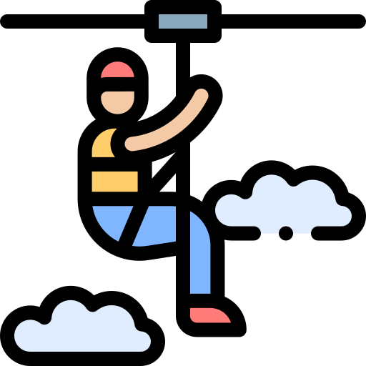

deportes extremos
11/11/21
esquiar
el deporte de esquiar, es un deporte extremo que se lleva acabo en lugares altos osea montañas y obiamente con nieve, puedes usar como equipo unos esquis o un snowboerd, y puedes llevar como seguridad un casco, una chamarra especial para la nieve y un pantalon esepcial. Este deporte es considerado extremo ya que es un deporte muy peligroso por sus altas probabilidades de muerte y no es muy facil de aprender, asi que si quieres intentarlo piensa y considera que es muy peligrosa.